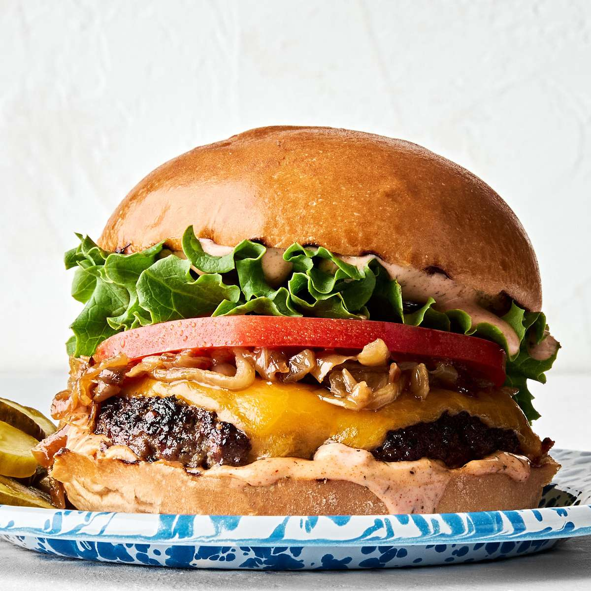

Worlds Best Burger
Home

- 1 pound ground beef (80/20 lean-to-fat ratio works best)
- 4 hamburger buns
- 4 slices cheddar or American cheese
- 1 teaspoon salt
- ½ teaspoon black pepper
- 1 tablespoon butter (for toasting buns)
-
Desired toppings: lettuce leaves, sliced tomato, sliced onion, pickles,
ketchup, mustard, or mayonnaise
-
Form the Patties: Divide the ground beef into 4 equal
portions. Gently shape each portion into a patty about ¾-inch thick,
making them slightly wider than the buns. Press a small dimple into the
center of each patty with your thumb to prevent bulging while cooking.
-
Season the Meat: Generously season both sides of the
patties with salt and black pepper right before cooking.
-
Toast the Buns: Melt the butter in a skillet or on a
griddle over medium heat. Place the buns cut-side down and toast until
golden brown, then set aside.
-
Sear the Patties: Heat a cast-iron skillet or grill
over medium-high heat. Add the patties and cook for 3 to 4 minutes on
the first side without pressing down on them. Flip, immediately add a
slice of cheese to each patty, and cook for another 3 to 4 minutes until
the internal temperature reaches 160°F (71°C).
-
Assemble the Burgers: Place each cheesy patty on a
toasted bottom bun. Layer with lettuce, tomato, onion, pickles, and your
favorite condiments before placing the top bun on.